Специальный файл устройства, или просто файл устройства (англ. special device file) — это один из типов файлов в UNIX-подобной операционной системе. Специальные файлы устройств содержат данные, необходимые операционной системе для взаимодействия с физическими устройствами, такими как диски и дисководы, принтеры и факсы и т. п. Фактически, специальные файлы устройств являются указателями на драйверы устройств, и когда процесс обращается к файлу устройств, он по сути работает с драйвером этого устройства.
Поскольку в операционной системе есть разные типы устройств, то и файлы устройств бывают разными. Есть два типа файлов устройств: блочные (англ. block special files) и символьные (англ. character special files). Блочные файлы устройств используются для передачи данных, разделённых на пакеты фиксированной длины — блоки. А символьные файлы устройств используются для небуферизованного обмена данными. Большинство устройств способно принимать и отправлять данные либо блоками (блочные устройства), либо сплошным потоком байтов (символьные устройства), но некоторые (такие как жёсткий диск) сочетают в себе обе эти возможности. Работа с первым типом устройств возможна либо через блочные, либо через символьные файлы, а вот с последним типом — подходят и те, и другие.
Файлы устройств размещаются в каталоге /dev или в его подкаталогах.
Узнать информацию о файле устройства можно с помощью команд file и ls.
Примеры подобных файлов:
Используемые команды в текущей лабораторной работе:
Сначала поработаем с dd. Команда (а по факту это все таки утилита) dd позволяет копировать что-то побайтово. Для чего это может пригодиться, например: выполнять резервную копию MBR, создавать дампы данных с различных накопителей, зеркалировать носители информации, восстанавливать из резервной копии данные на носители, скопировать первые n байт файла, пропустить m байт от начала, прочитать файл с дефектного носителя, транслировать содержимое файла в ASCII, и многое другое, а, при совмещении возможностей dd и поддержке криптографических алгоритмов ядра Linux, можно даже создавать зашифрованные файлы, содержащие в себе целую файловую систему.
Пример комманды:
$ dd if=/dev/urandom of=/dev/null bs=100M count=5Параметры:
Таким образом, описанная команда читает 5*100 мегабайт из устройства /dev/urandom в устройство /dev/null. Придавая этой команде смысловую нагрузку получается, что система сгенерирует 500 мегабайт случайных значений и запишет их в null устройство т.е. в никуда. Конечно, единственное, что сделает эта команда: нагрузит процессор на несколько секунд.
Создадим резервную компию MBR, для этого нам потребуется скопировать первые 512 байтов информации с диска, именно в них содержиться MBR. MBR состоит из небольшой части ассемблерного кода (начальный загрузчик – 446 байт), таблицы разделов - 4 первичных раздела (16 байт каждый) и стража (0xAA55). Вообще в целом MBR выглядит вот так.(там внизу статьи будет ассемблерное представление MBR)
Команда для создания резервной копии выглядит вот так:
$ dd dd if=/dev/sda of=/path/mbr-backup bs=512 count=1
И вот такой командой восстановить если друг у вас все посыпалось:
$ dd if=/path/mbr-backup of=/dev/sda bs=512 count=1
Подобный бекап выглядит вот так.
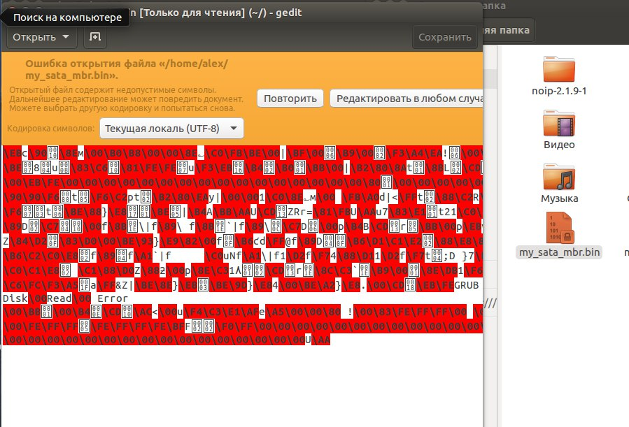На самом деле данная команда очень функциональна, с её использованием вы можете ознакомиться по этой ссылке.
Теперь поработаем с fdisk. Если что это местный аналог Diskpart, который есть в Windows. Для выполнения этой части лабораторной вам потребуется бесхозная флешка. С помощью этой утилиты мы разобьем вашу флешку на разделы, которые будут для условной unix системы. АХТУНГ!! Если будете брать флешку на которой есть важный документы, то перед началом лабораторной работы перенесите их с неё.
Чтобы подключить флешку к виртуальной машине требуется подключить флешку к ПК и дождаться пока её опознают, и дальше в интерфейсе виртуальной машины выбрать следующий пункт меню, где найти нужную вам флешку:
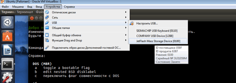Она подключиться и появится на панели слева:
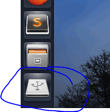Для начала просто посмотрим список имеющихся дисков и информацию о них, выполняйте данную команду от имени администратора
$ ls /dev | grep sd
Имена разделов диска получаются добавлением к имени диска десятичного числа: sda1 и sda2 представляют первый и второй разделы на первом диске SCSI в системе.
Вот реальный пример. Предположим, что вы имеете систему с 2-мя SCSI дисками, один имеет SCSI адрес 2, а другой SCSI адрес 4. Первый диск (с адресом 2) называется sda, а второй sdb. Если диск sda содержит 3 раздела, то их имена будут sda1, sda2 и sda3. То же относится к диску sdb и его разделам.
В общем итоге у нас есть один диск системный, с 4-мя разделами(sda) и флешка(sdb)
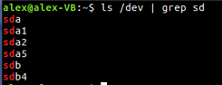Так же, помимо sda могут быть и другие: sdb, sdc и.т.д.
Если у нас есть созданные разделы, информацию о них можем посмотреть такой командой:
$ /sbin/fdisk -l /dev/sdb
Вот, мы нашли тот раздел, над которым будем издеваться.
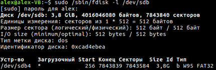Далее, мы можем переходить к работе с fdisk, для этого вводим команду и в аргументе указываем нужный нам диск, в данном случае «/dev/sdb».
$ fdisk /dev/sdb
После чего, попадаем в меню fdisk. Сказано набирать m для справки, смело набираем Читаем и изучаем функционал.
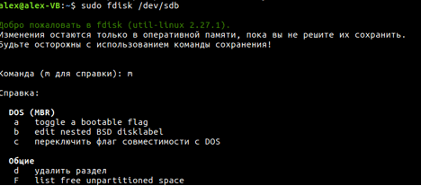Предположим, команда «/sbin/fdisk -l /dev/sda» показала, что диск «sdb» пустой и нам нужно разбить его.
Для начала создадим раздел для «boot». Также следует упомянуть, что очередность имеет значение, чем ближе раздел к началу диска — тем больше скорость считывания, из-за скорости вращения. Сначала командой d – удалим разделы, которые уже есть Потом командой p – создадим новые разделы
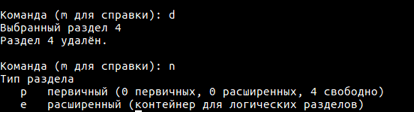После ввода n fdisk у вас будет спрашивать про параметры разделы, т.к.
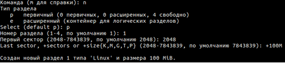Далее, следует создать «swap» (раздел подкачки). Обычно в 2 раза больше ОЗУ
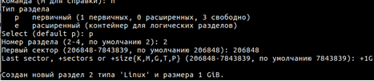После чего, создаем корень «/usr».
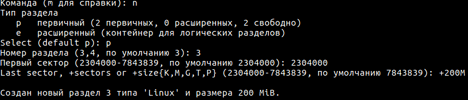Далее, с помощью fdisk, нам нужно создать расширенный раздел «extended». Если вы планируете обойтись четырьмя разделами (например: /boot, swap, /usr, /home), тогда создавайте четвертый «primary».
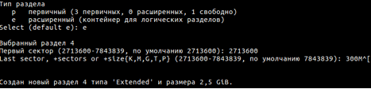Продолжаем дальше создавать логические разделы «logical». Создадим раздел «/tmp».
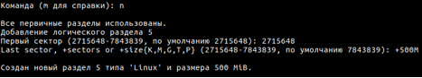Далее мы умышленно пропустим некоторые разделы из стандартной файловой системы UNIX, но вы их можете до создавать сами по точно такой же схеме.
На этом операции с fdisk-ом не закончены. Нам нужно установить флаг загрузочного раздела.
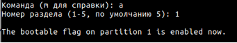Далее, нам нужно изменить метку типа раздела, для «swap». Во время выбора, fdisk нам предложит напомнить типы известных разделов, для этого после вывода
Потом, выводим наши созданные разделы на экран, убеждаемся, что все в порядке.
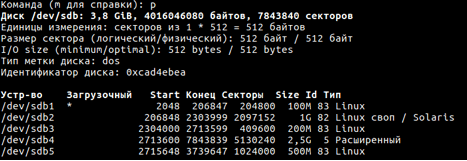Сохраняемся (команда W), на этом все, с fdisk закончили.
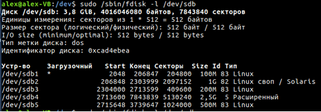Вот и все, теперь вы немного умеете работат с дисками под Unix. Теперь ваша задача зайти в Windows и удалить все разделы и вернуть флешку в первоначальное состояние.
Так то в принципе все получилось, те разделы которые мы создавали они создались. Если у вас появилась ошибка(особенно на последнем этапе, на котором мы сохраняем изменения), то сделайте скриншот и покажите преподавателю! Помимо вышеописанного средства есть и другие, графические средства для работы с жесткими дисками, например GParted.
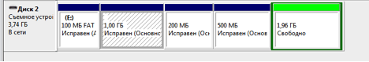В Windows восстановление единого раздела происходит через контекстное меню, щелкаете по конкретному разделу и выбираете "удалить", и место на устройстве станет нераспределенным и проделываете это со всеми разделами, потом выбираете нераспределенную область и делаете единый раздел.
Ну и напоследок для кучи поработает с crontab - местным планировщиком заданий.
Создайте в домашней директории пустой файл, с таким же расширением. Первая команда создаёт файл. Вторая команда дает ему права на выполнения.
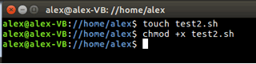И просто в файле перечислите команды какие-либо, из 8 лабораторной работы по Unix.
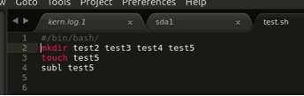Теперь открывает crontab, командой crontab –e, после этой команды он у вас спросит, какой текстовый редактор использовать, выберите из предложенных - nano. И перед вами откроется текстовый файл в консоли, навигация по нему стрелочками. Допишите в него последнюю строчку, там где «alex» - имя ВАШЕГО пользователя и сохранитесь комбинацией клавиш ctrl + o и выйдите ctrl + x. И теперь у вас каждую минуту в вашей домашней директории будет создаваться куча папок и файл. Чтобы отключить просто уберите эту строчку из файла.
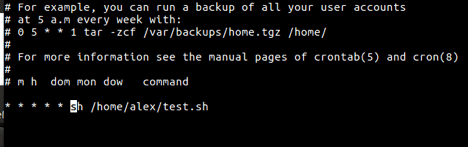И теперь этот скрипт будет выполняться у вас каждое n-ое количество времени. По поводу указания времени у каждой команды в планировщике.
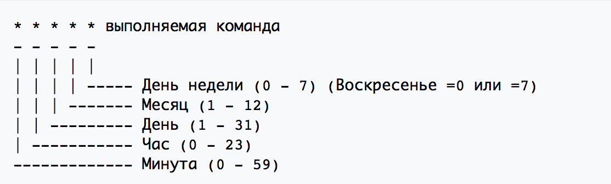